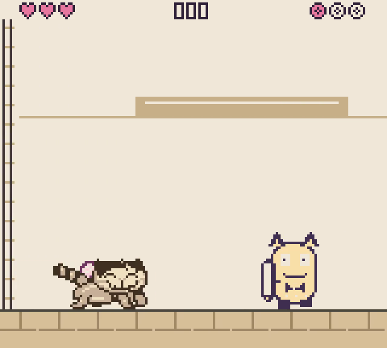
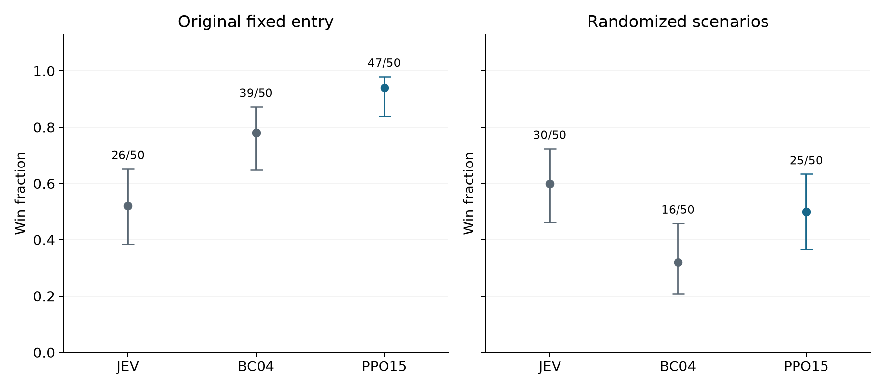

Working paper · 19 October 2026 · Supplement · Code and reproduction status
We study whether supervised and reinforcement fine-tuning can produce a small language-model policy for real-time gameplay. Starting from pretrained Qwen3.5-0.8B, we behavior-clone successful JEV demonstrations and perform 16 iterations of proximal policy optimization on the Head Goon boss encounter. In dedicated evaluations, JEV wins 26/50 games, the behavior-cloned policy wins 39/50, and the reported PPO checkpoint wins 47/50. The PPO–BC difference is 16 percentage points, with nominal Fisher p = 0.0407. On 50 shared scenarios with randomized boss positions and attack schedules, the corresponding win rates are 60%, 32% and 50%; paired differences between PPO and either reference remain uncertain. These results show high observed performance in the trained setting, with lower performance under scenario variation. Checkpoint choice used evaluation outcomes, and differences in deployment latency limit causal interpretation.
Can a small language model learn to play a real-time game from demonstrations and then improve through interaction? We investigate this question in Kittie Has Other Plans, a native Game Boy game. JEV provides gameplay demonstrations and an evaluation reference. We train Qwen3.5-0.8B first by behavior cloning and then by reinforcement fine-tuning on Head Goon, the game's boss encounter.
The game continues while a policy computes its next action. Performance therefore depends on both the decisions and their application time. We retain this real-time interaction during training and evaluation.
We address two questions:
The player must hit Head Goon three times with a wool ball while the boss is vulnerable, then reach the encounter's completion state. The player can move, jump, throw the ball along a flat or lobbed path, and recover it after a throw. The boss alternates between movement, attacks and vulnerability windows. Contact can damage the player. We call the fixed starting state and standard boss schedule used for PPO training the original encounter.

The boss is on the left and the player is on the right. The game requires movement and correctly timed throws, not merely choosing an attack label.
Frame extracted at 2 seconds from the retained PPO15 winning replay. Watch the replay.
At each decision, the emulator supplies a structured text observation containing positions, health, held buttons, boss phase, ball state, recent events and derived physical forecasts. Forecasts use information available at the observation time; they are not observations of the future. An actual randomized-encounter prompt shows the state fields and mechanics instructions.
Each action combines the following controls, giving 3 × 2 × 3 = 18 possibilities:
| Component | Choices |
|---|---|
| Horizontal control | Neutral, left, right |
| A-button control | Released, held |
| Throw control | None, flat, lob |
For example, “right + A held + lob” holds Right, A, B and Up together. Jumping and throwing require fresh button presses, so holding A or B does not repeatedly trigger the action. In dedicated Qwen evaluations, we choose the combined action with the highest probability. JEV returns a movement/A-button choice and a throw choice for each facing direction; we apply the throw choice matching the resulting direction. Neutral movement preserves the current facing. Both use the same physical controls, but their selection procedures differ. The supplement lists all 18 combinations and the probability calculation.
Behavior cloning starts from pretrained Qwen3.5-0.8B and uses successful JEV demonstrations from five game levels. The resulting checkpoint is BC04. The initialization and supervised-stage details appear in Appendix A. JEV's evaluation games are separate from these success-filtered training demonstrations. Whole demonstration trajectories remain in their assigned training, validation or held-out splits.
| Setting | Behavior cloning | Head Goon PPO |
|---|---|---|
| Training data | Successful JEV demonstrations from five levels | Fresh complete Head Goon episodes |
| Schedule | Supervised stages specified in Appendix A | 16 iterations, up to 2 passes each |
| Actor learning rate | 5 × 10−5, then 10−5 | 3 × 10−6 |
| Effective batch size | 32 | 64, accumulated singleton forwards |
| Adapter / optimizer | Rank-8 LoRA / AdamW | Same adapter / continuous PPO state |
| Compute configuration | One Modal A10 worker at a time | One Modal A10 worker at a time |
The final BC stage uses 70 successful training trajectories with 4,423 decisions, including 552 Head Goon decisions from 11 trajectories. Validation and held-out splits contain 1,360 and 1,632 decisions. BC minimizes weighted negative log likelihood. Appendix A specifies the full BC sequence, weighting and source records.
Each PPO iteration collects at least 512 decisions and eight complete episodes, allowing whole-episode overshoot. Rollouts sample actions at temperature 1. PPO uses clipping coefficient 0.2, entropy coefficient 0.01 and numerical/KL safeguards. Recorded action probabilities, values and advantage targets remain fixed during each update. A separate critic predicts remaining discounted reward from detached Qwen features; critic fitting does not update Qwen. Actor, critic, optimizer and random-number-generator state continue across iterations. Full settings appear in Appendix B.
The reward encourages completion and boss damage, penalizes injury, failure and elapsed time, and favors hits with fewer preceding rebounds:
| Event | Reward |
|---|---|
| Complete encounter | +100; additionally +2 per remaining heart and +2 per carried ball |
| Damaging boss hit | +20 × 0.5b, where b is the number of preceding surface rebounds in that throw |
| Unique boss defeat | +2 |
| Player damage | −4 per heart lost |
| Player death | −30 |
| Episode time limit | −5 |
| Elapsed game time | −0.1 per second |
Pickup and a new throw reset the rebound count. Boss-hit response, resting contact and the top of a flight arc do not count as surface rebounds. Traversal-only distance and bell rewards are inactive in Head Goon. Boss reward implementation and shared event rewards.
We completed 16 PPO iterations and chose PPO15 as the primary reported checkpoint using subsequent 50-game evaluations. These are exploratory comparisons rather than independent tests of a checkpoint chosen in advance. PPO10 remains a secondary analysis in the supplement.
The original-encounter cohorts contain 50 games per policy from one saved starting state. The randomized cohorts use 50 shared scenarios generated independently of their outcomes. We vary initial boss position uniformly over integer x coordinates 256 through 304, patrol duration uniformly over 27 through 81 updates at each patrol, and the number of hops uniformly over one, two or three at each sequence. The vulnerability window remains 72 updates and other mechanics are unchanged. These parameters were not randomized during training.
All policies receive current countdowns and committed hop counts; future schedule draws remain hidden. Each scenario supplies the same native entry and schedule to every policy. Each game ends at completion, death, 90 seconds or 5,400 frames. Qwen uses greedy joint actions; JEV uses its returned choices. Model inference occurs while the game runs. Appendix C reports measured timing distributions and the separate JEV delay experiment; Appendix D reports the one-frame sensitivity check.
We report nominal 95% Wilson intervals for win rates. Separate original-encounter cohorts use two-sided Fisher tests and unpaired score intervals. Randomized comparisons use whole-scenario pairing, bootstrap intervals for the difference and exact two-sided McNemar tests. Analyses are exploratory, with no multiplicity correction. Fixed-entry repetitions can share trajectories and timing correlations; intervals do not include uncertainty across independent training runs.

| Policy | Wins | Win rate | Nominal 95% interval | Latency, ms |
|---|---|---|---|---|
| JEV | 26/50 | 52% | 38.5% to 65.2% | 234 |
| BC04 | 39/50 | 78% | 64.8% to 87.2% | 288 |
| PPO15 | 47/50 | 94% | 83.8% to 97.9% | 285 |
Latency is the mean of episode-median observation-to-action times, excluding the post-action interval. This statistic is used consistently in both main tables.
PPO15 won 47/50 games, compared with 39/50 for BC04 and 26/50 for JEV. Relative to BC04, the observed improvement is 16 percentage points, with nominal 95% interval 2.2 to 29.8 points and Fisher p = 0.0407. Relative to JEV, it is 42 points, with interval 25.3 to 56.1 points and p = 2.65 × 10−6. These results support higher observed performance for PPO15 under the original deployment protocol.
| Policy | Wins | Win rate | Nominal 95% interval | Latency, ms |
|---|---|---|---|---|
| JEV | 30/50 | 60% | 46.2% to 72.4% | 188 |
| BC04 | 16/50 | 32% | 20.8% to 45.8% | 314 |
| PPO15 | 25/50 | 50% | 36.6% to 63.4% | 310 |
Observed win rates fall to 32% for BC04 and 50% for PPO15. PPO15 wins 15 scenarios that BC04 loses; BC04 wins 6 that PPO15 loses. The paired difference is 18 points, with nominal bootstrap interval 0 to 36 and exact p = 0.0784. The data favor PPO15 numerically but leave improvement under scenario variation uncertain.
JEV wins 60% of scenarios and has lower response latency. Its ten-point advantage over PPO15 has paired interval −6 to 26 points and p = 0.3593. This does not establish a win-rate difference or equivalence. These evaluations do not isolate why the observed rates differ. The completed cohorts contain only wins and deaths, with no timeouts or service errors; all outcomes remain included.
Supervised and reinforcement fine-tuning produce a small policy with high observed performance in the trained boss encounter. That performance does not extend unchanged to varied boss positions and attack schedules. The positive but uncertain randomized PPO–BC difference leaves the size of any transfer benefit unresolved.
JEV and Qwen differ in training history, action selection and deployment latency. JEV's model size is not established here. The delay sensitivity experiment approximately matches PPO15's central latency distribution and substantially reduces JEV's observed win rate, but retains a longer slow-response tail. It supports sensitivity to deployment timing without establishing that latency explains the entire cross-model difference.
The study contains one training lineage, selection informed by evaluation outcomes, and adaptive follow-up. Original encounters repeat a fixed entry. Original Qwen evaluations used A10 hardware, while randomized PPO evaluations used A10G; fixed-probe checks found one changed top action among eight PPO15 observations across those workers. Thus the entire original-to-randomized difference cannot be attributed solely to scenario variation. Independent retraining and controlled serving conditions are needed for stronger algorithmic conclusions.
The companion package reproduces statistics and figures from 510 exported evaluation records and contains the scenario and delay schedules as supplied inputs. It also documents the actual training lineage and provides a tested scheduling reference. Standalone GPU training and native-evaluation packaging remains incomplete. The supplement links all detailed reports.